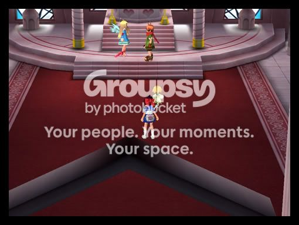

รวบรวมเควสวาเลนไทน์ 2009
มาช่วยกันทำเควสวาเลนไทน์กันดีกว่าครับ
สำหรับผมตอนนี้ทำเควสรับไทนี่สลิปเปอร์เสร็จเรียบร้อยแล้ว เลยมาทำไกด์เควสนี้เอาไว้ให้ก่อน เพื่อนๆคนไหนทำเควสอื่นๆเสร็จก็มาช่วยกันทำไกด์ได้นะครับ
วิธีทำเสื้อสเว็ตเตอร์ By WiNdAbLe
วิธีทำเครื่องประดับอก ปีก และหาง By Astralitas
สำหรับผมตอนนี้ทำเควสรับไทนี่สลิปเปอร์เสร็จเรียบร้อยแล้ว เลยมาทำไกด์เควสนี้เอาไว้ให้ก่อน เพื่อนๆคนไหนทำเควสอื่นๆเสร็จก็มาช่วยกันทำไกด์ได้นะครับ
เควสไทนี่สลิปเปอร์
- เริ่มต้นที่เกาะไทนี่ครับ วิ่งไปหาไททาที่ยืนอยู่ตรงบ่อน้ำบนเกาะไทนี่ คุยกับเธอซะ เธอจะให้หาของทำชอคโกแลตเค้กครับ ถ้าไม่อยากเสียเวลาก็พกของทำชอคโกแลตเค้กมาด้วย 1 ชุด (ชอคโกแลต+บาร์เล่ท์พาวเดอร์+บัทเตอร์+ไข่)
- จากนั้นส่งของทำเค้กให้ไททา เธอจะรับไปทำเค้กแล้วให้เราเอาเค้กไปมอบให้อีมิลบนอัพทาวน์ครับ (วิ่งย้อนจากไทนี่อัพทาวน์ขึ้นมานิดเดียว) ตรงนี้จะเข้าสู่เนื้อเรื่อง อยากให้ลองอ่านครับ
- เมื่อให้เค้กกับอีมิลแล้ว ให้เรากลับมาคุยกับไททาอีกครั้ง เมื่อคุยเสร็จจะมีเสียงประหลาดเรียกเรา ให้วิ่งไปคุยกับ Rest Tiny ข้างๆไททาครับ มันจะพูดถึงผลไม้บางอย่างที่หาได้จาก Tiny Flower ในช่วงวาเลนไทน์นี้เท่านั้น
- ไปตี Tiny Flower เพื่อหา Co - Enzyme มา 2 เม็ด แล้วกลับไปคุยกับไททา เธอจะกินมันเข้าไป แล้วให้เราวิ่งกลับไปคุยกับ Rest Tiny อีกครั้ง
- Rest Tiny จะใบ้ว่าถ้ากิน Co - Enzyme เข้าไปแล้วจะ... มันบอกแค่นี้ทิ้งไว้ให้เป็นปริศนา กินแล้วจะเป็นยังไงอยากรู้ก็ต้องลองกินครับ
- กินแล้วเราจะไปอยู่โบสถ์วาเลนไทน์ จากนี้จะเข้าสู่เนื้อเรื่อง อยากให้อ่านดูครับ เมื่อจบเหตุการณ์เรียบร้อยให้วิ่งออกมา จะกลับมาอัพทาวน์
- กลับไปหาไททาบนเกาะไทนี่อีกครั้ง คราวนี้เธอจะขอบคุณเราและให้รองเท้าแตะไทนี่มาแล้วจ้า
วิธีทำเสื้อสเว็ตเตอร์ By WiNdAbLe
WiNdAbLe เขียน:ได้เสื้อละ... มาบอกวิธีทำแบบคร่าวๆถ้าคนที่ยังไม่ได้ทำเควสหางหรือปีกมาก่อนล่ะก็ ให้ทำก่อนนะครับ ไม่งั้นเควสอาจตีกันได้
หลังจากนั้นก็ให้คุยกับpotato มันจะบ๊อก บ๊อกยังไงก็ช่าง แล้วคุยกับcupidต่อ
แล้วขึ้นUptownไป คุยกับมาช่า เธอจะทำก้อนกลมๆตกลงมา เก็บมาซะแล้วคุยกับไอ้ก้อนนั้นซะด้วยการDouble Clickในช่องItem
ทำให้เรารู้ว่า ก้อนนั้นคือไหมพรมที่ไม่ได้ถัก(และหมดกำลังใจจะถัก)ของมาช่านั่นเอง มันจะบ่นน้อยใจไปเรื่อยๆ ให้คุยตามน้ำกับมันไปจนกว่าจะมีให้เลือกลงมือถักเสื้อ
ขั้นต่อไป ให้หาFurมา100อัน Purifyซะ จะได้Worsted100อัน คลิกคุยกับก้อนไหมพรม มันจะทำการแปรรูปWrosted100อันของเราเป็นWool Ballจำนวน10ลูก
ยังไม่จบ ใครว่าเลือกสีได้เลย ต้องไปหาผงสีตามที่เราอยากได้มาให้มันอีก พอได้ผงแล้วก็คลิกคุยกับมันเหมือนเดิม จะได้ไหมพรมย้อมสีมาจำนวน10ลูก
คุยอีกที จะเริ่มลงมือถักเสื้อล่ะ และแล้วก็ได้เสื้อสเวทเตอร์สุดสวยมา1ตัว!
วิธีทำเครื่องประดับอก ปีก และหาง By Astralitas
Astralitas เขียน:Rose tie
madonna>dega>nikkoro>madonna>nikkoro>dega>mister rock(snop triangle)>nikkoro>madonna
Wing&Tail
potato>Cupid>Norz(Uptown)>Cupid>Berial Girl Friend(Uptown)>Cupid>the girl ask love>Cupid